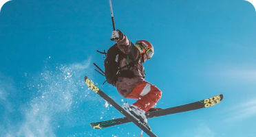

Ночные линзы Moon Lens —
Отличное зрение на весь день
Ощути свою свободу с ночными линзами MoonLens!
Без очков. Без операций. Без дневных линз.
Свобода
движения
Веди активный образ жизни гдебы
то ни было и при любых условиях

Свобода
Свобода
стремлений
Занимайся любыми видами спортаи
и достигай новых вершин
Свобода общения
и самовыражения
Раскрой свой потенциал общения
и самовыражения
- Поделится опытом
- Запписатся на прием
-
Задайте вопросы